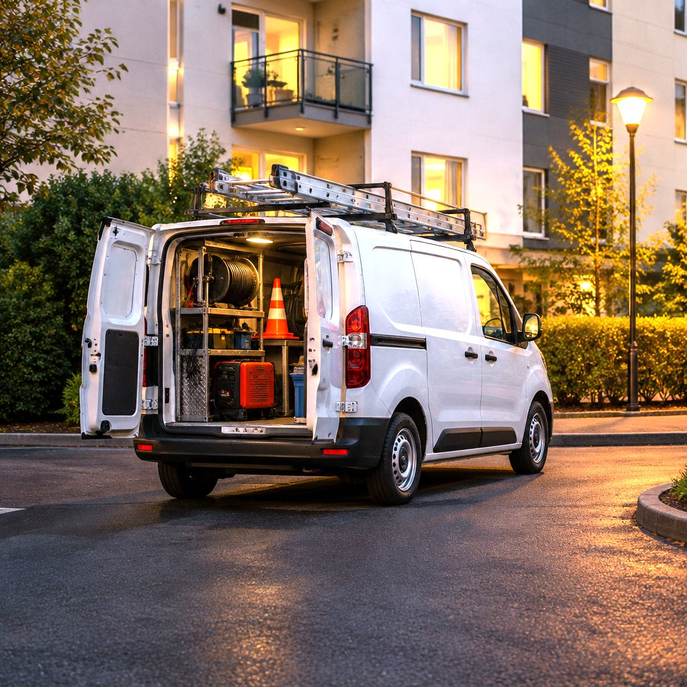

Вода стоит ночью? Выезжаем в любое время
Ночь, выходной или праздник не меняют ни порядок работы, ни цену. Позвоните, опишите ситуацию — мастер выедет сразу после разговора.
Четыре шага, пока мастер в пути
Эти действия уменьшают ущерб и ускоряют работу.
Перекройте воду
Закройте ввод или краны на смесителях, чтобы вода не прибывала.
Не лейте химию
Агрессивные средства в стояк опасны для труб и для мастера.
Уберите воду
Соберите воду с пола тряпкой или шваброй, чтобы не потекло к соседям.
Освободите доступ
Уберите вещи от ревизии, унитаза и колодца во дворе.
Борисов и Минская область
Работаем по городу и району. Выезд за город согласуем по телефону — зависит от расстояния и времени суток.
Все районы города, включая частный сектор.
15–40 минАгрогородки и деревни по трассам.
по согласованиюДальние адреса — по договорённости, цену называем заранее.
по согласованиюНапишите, если неудобно звонить
Оставьте телефон — перезвоним сами. Если ситуация аварийная, лучше звонить: так быстрее.
Не ждите утра
Круглосуточный номер: +375 (29) 117-67-36. Скажем, когда мастер будет у вас.